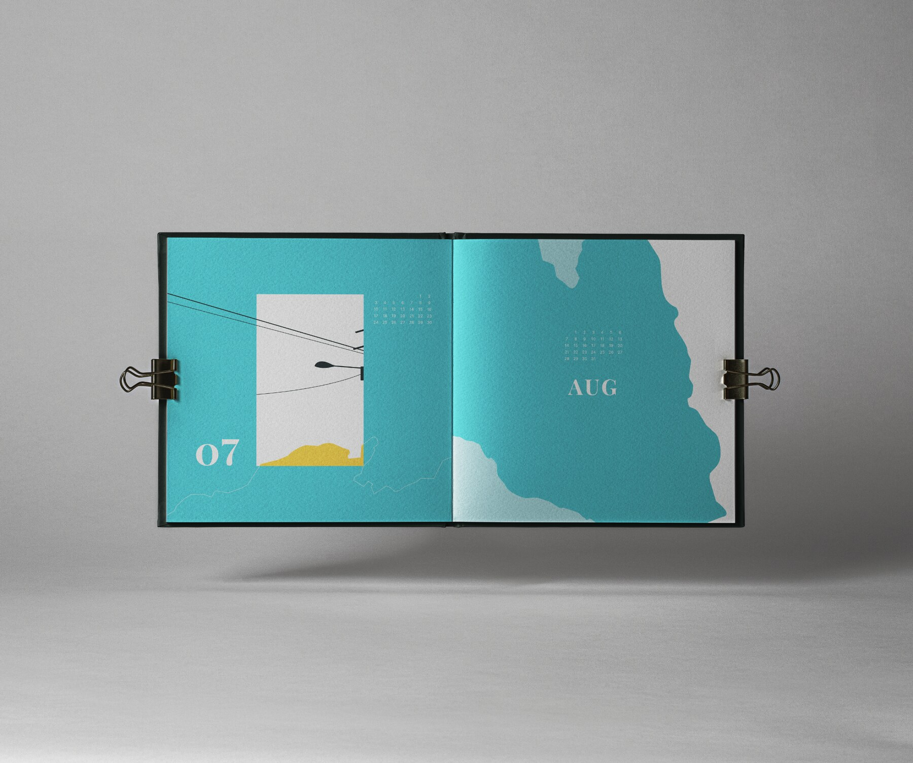

Visual System · Calendar Design · 2021
Void
A twelve-month visual system derived from seasonal photographs of skies, clouds, streetlights, and wires.

- Role
- Visual designer
- Timeline
- Mar – Jun 2021
- Scope
- Grid · Colour · Illustration
Design Direction
The calendar translates photographs into a repeatable system: streetlights and wires establish the grid, while changing skies, clouds, brightness, and saturation shape each month's seasonal identity.
Photographic grid
Lines observed in streetlights and wires become an organising structure for type and illustration.
Seasonal colour
Four main palettes mark the seasons, with a distinct accent creating variation month by month.
Typographic contrast
Display serif month names are paired with restrained sans-serif dates.